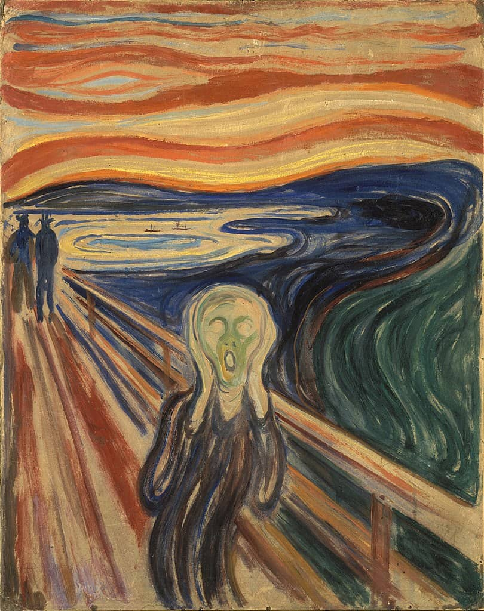

יחידה 1 · חוויה אישית כמקור השראה · שיעור 1.1
איך חוויה
הופכת ליצירה?
בשיעור הזה נצא מחוויה אישית אחת,
ונבדוק איך צבע, קו וקומפוזיציה יכולים לתת לה צורה.
נקודות מוצא
יצירה יכולה להתחיל מ…
החוויה היא נקודת המוצא, לא התוכן.
לא צריך לצייר את מה שקרה, כדי שהציור יישא משהו ממנו.
מקורות השראה
שלושה אמנים.
שלוש דרכים להפוך חוויה ליצירה.

FRIDA KAHLO · 1907–1954
פרידה קאלו
בגיל 18 נפצעה קשה בתאונת אוטובוס, והחלה לצייר כשהיא מרותקת למיטה, מול מראה.
היא ציירה את עצמה שוב ושוב, אבל לא כתיעוד. הגוף, הכאב, הזהות והשורשים המקסיקניים הפכו לשפה של סמלים.

EDVARD MUNCH · 1863–1944
אדוורד מונק
מונק כתב על ערב שבו הלך עם חברים, והשמיים נצבעו פתאום אדום כדם. הוא עצר, רועד, וחש "צעקה אינסופית שעוברת בטבע".
הוא לא צייר את הנוף כפי שנראה, אלא את התחושה.
LOUISE BOURGEOIS · 1911–2010
לואיז בורז'ואה
כל חייה חזרה בורז'ואה לזיכרונות הילדות שלה בצרפת. אמה עבדה בבית המלאכה המשפחתי בתיקון שטיחי קיר.
העכביש הענק שבנתה, טווה, מתקן, מגונן, הוא מחווה לאמה.
התבוננות · מהסיפור אל השפה החזותית
מה ביצירה גורם לנו
לחוות אותה כך?
בחרו מרכיב אחד וראו איך הוא פועל.
נקודת מוצא אישית
עכשיו המבט מסתובב פנימה.
בחרו חוויה אחת.
הכתיבה לא נשמרת ולא נשלחת לשום מקום. היא רק עוזרת לכם לחשוב.
נקודת מוצא אישית · 1 / 2
איזה פרט מהחוויה
נשאר איתכם במיוחד?
החוויה שלכם:
נקודת מוצא אישית · 2 / 2
מה הייתם רוצים להעביר ממנה,
בלי לצייר בהכרח את מה שקרה?
מעבדת ניסויים
שלושה ניסויים.
חוויה אחת.
לא שלושה נושאים ולא שלוש יצירות. שלוש דרכים חזותיות לבדוק את אותה חוויה.
אותה חוויה בשלושת הניסויים:
ניסוי 01 · כ-10 דקות
צבע
אותה חוויה:
ניסוי 02 · כ-10 דקות
קו ותנועה
אותה חוויה:
ניסוי 03 · כ-10 דקות
מרחב וקומפוזיציה
אותה חוויה:
בחירת כיוון
הניחו את שלושת הניסויים זה לצד זה והתבוננו בהם.
אל תבחרו את היפה ביותר.
בחרו את זה שאתם רוצים לדעת לאן הוא יכול להתפתח.
פיתוח יצירה אחת
הסקיצה היא נקודת מוצא.
לא תוכנית שחייבים להעתיק.
עברו לדף גדול יותר, ופתחו את הניסוי שבחרתם.
עצירה אחת באמצע העבודה
הרחיקו את הדף.
התבוננו.
התבוננות בתהליך
הציבו את הניסויים
לצד העבודה.
החוויה הייתה נקודת המוצא.
היצירה מצאה את הדרך שלה.
בשיעורים הבאים ביחידה נעמיק בכל פעם בהיבט אחד: קו, צבע, קומפוזיציה, זיכרון ויומן חזותי.